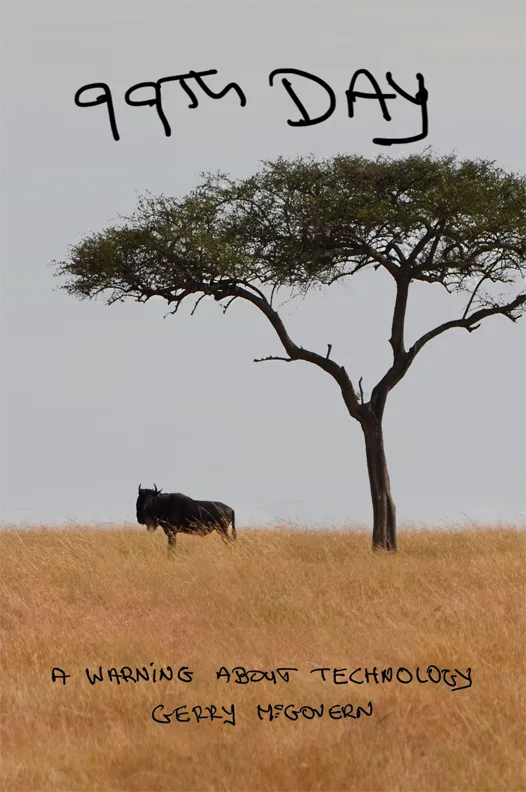

Technology, Mining & Waste

With: Gerry McGovern
Date: Tuesday, June 2 — 12:00 PM (Eastern Time)
Modern technology is often presented as clean, efficient, and essential to solving environmental problems. But behind batteries, data centers, AI systems, electronics, and infrastructure lies an expanding demand for mining, energy, and waste disposal.
Join Hart Hagan in conversation with author Gerry McGovern for a calm and factual discussion about the hidden environmental costs of technological growth.
We will explore how copper, aluminum, and other materials are extracted, how electronic waste is handled, and why rising digital energy demand deserves greater public attention.
What You Will Learn
- Why the energy transition requires vast new mining operations
- The environmental impacts of copper and aluminum production
- How AI and data centers increase electricity demand
- Why electronic waste is one of the fastest-growing waste streams
- The limits of endless technological expansion
- Practical ways to think more clearly about technology and ecology
About Gerry McGovern
Gerry McGovern is the author of 99th Day: A Warning About Technology and World Wide Waste. He is internationally known for helping organizations reduce waste and improve usefulness through his Top Tasks method.
His recent work focuses on the environmental costs of digital systems and the broader consequences of modern technological growth.
Who Should Attend
Anyone interested in climate, sustainability, technology, public policy, and the long-term health of land, water, forests, and future generations.
Recording
A recording will be available to everyone who registers.